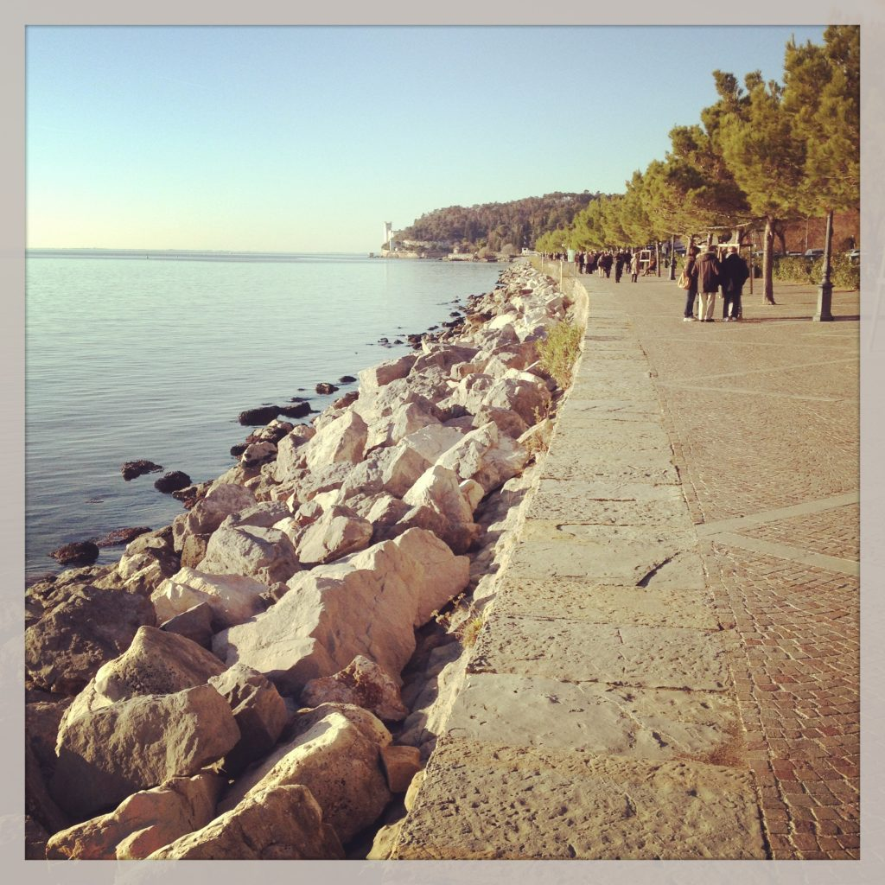

Sunday walk
The major meal of the Sunday get-together is always lunch (pranzo). Italians get up, some of them go to mass (messa) and then they meet for lunch. After that, they enjoy the passeggiata (walk) in the piazza, which can be seen as a great parade where people meet other people either by appointment or by chance, and show off their holiday clothes while digesting the rich meal they’ve eaten a few hours before. By dinner time they are back home, ready to check soccer (calcio) results. {This is an excerpt from chapter 14 “Italian lifestyle” of the eBook “Italy from the Inside. A native Italian reveals the secrets of traveling in Italy”. Buy our eBook on Amazon and leave us a review! If it’s good, you’ll make us happy, if it’s bad, you’ll make us improve. Thank you either way!}